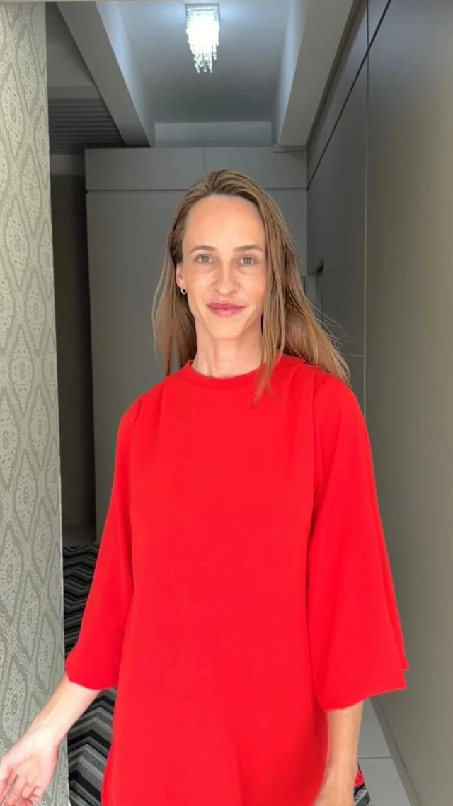
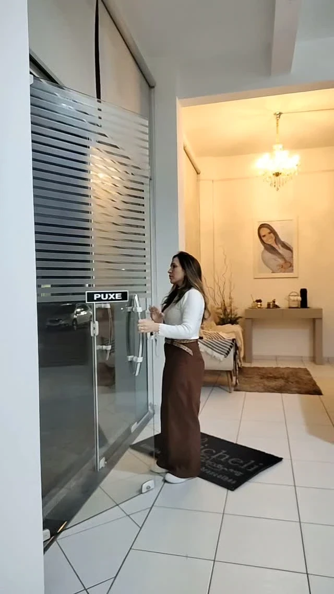
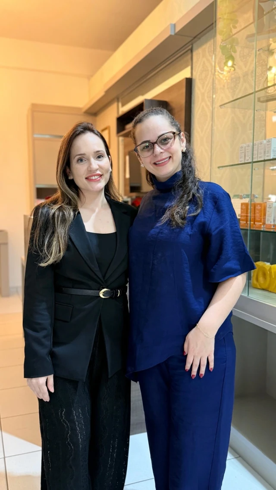

01 Escuta
Tudo começa por entender o que você quer e o que prefere preservar.
Clínica Micheli Rodrigues · Braço do Norte/SC
Harmonização facial com planejamento do rosto inteiro e cuidado com sutileza. Antes de qualquer decisão, uma conversa.

Como ela pensa
Um rosto não é uma soma de áreas isoladas. Expressão, proporção e a forma como cada traço conversa com o outro contam tanto quanto qualquer detalhe.
Por isso o trabalho começa pelo planejamento: olhar o rosto inteiro, entender o que faz sentido para cada pessoa e conduzir tudo com sutileza, como objetivo do cuidado, sem promessa de resultado.
O passo atrás
Do detalhe ao conjunto, em quatro etapas. Descrição geral, a validar com a clínica.
Tudo começa por entender o que você quer e o que prefere preservar.
O rosto é lido como um todo: proporções, expressões e a relação entre as partes.
As possibilidades são explicadas com clareza, no seu ritmo, e você participa das escolhas.
O cuidado não termina na consulta: o caminho é revisto e ajustado com o tempo.
Tudo começa por entender o que você quer e o que prefere preservar.
O rosto é lido como um todo: proporções, expressões e a relação entre as partes.
As possibilidades são explicadas com clareza, no seu ritmo, e você participa das escolhas.
O cuidado não termina na consulta: o caminho é revisto e ajustado com o tempo.
A avaliação
Descrição geral do que costuma acontecer em uma avaliação de harmonização facial. O roteiro exato é definido pela clínica.
Um espaço para contar o que você observa no seu rosto e o que gostaria de cuidar.
A análise considera o conjunto, não só a região de que você falou primeiro.
Opções, cuidados e limites apresentados em linguagem simples, sem pressa de decidir.
O próximo passo é combinado com você. Valores, prazos e indicações são confirmados diretamente com a clínica.
A clínica
Em Braço do Norte/SC. Endereço a confirmar com a clínica.


Dúvidas
É o objetivo do planejamento: respeitar a sua expressão e as proporções do conjunto, sem exageros. Sutileza é uma direção de cuidado, não uma garantia de resultado. Cada pessoa é diferente.
É uma conversa em que o rosto é observado por inteiro e as possibilidades são explicadas com clareza. O roteiro exato, a duração e o que é necessário levar devem ser confirmados com a clínica.
A clínica atua com harmonização facial. A lista vigente de serviços, os valores e os horários não estão confirmados nesta prévia e devem ser informados diretamente pela clínica.
Contato
Envie uma mensagem pelo WhatsApp. Você pode editar o texto antes de enviar.
Braço do Norte/SC · endereço a confirmar